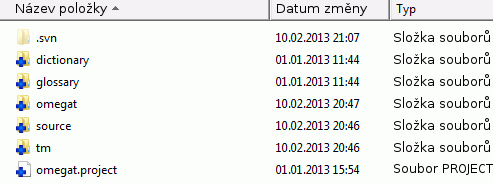
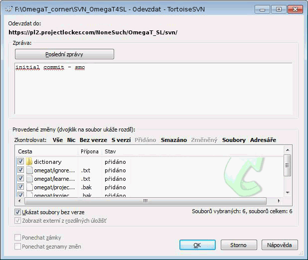

Překlad založený na spolupráci více překladatelů, který nabízí OmegaT, se zakládá na funkčnosti verzí nebo správě revizí, hojně používané softwarovou komunitou pro správu změn v kódu programu a umožňuje tak nerušenou spolupráci v rámci vývojářského týmu. OmegaT podporuje dva z populárních systémů na správu verzí (version control systems / VCS), Apache Subversion (často zkracováno jako SVN, po příkazu jako svn) a Git. Výhody systémů na správu verzí pro tým překladatelů se dají shrnout následovně:
-
Hned několik členů týmu může pracovat na projektu ve stejný čas bez toho, aby se vzájemně rušili
-
Členové mohou sdílet společné materiály, jako např. překladovou paměť projektu a příslušné glosáře
-
Ve výchozím nastavení je pro zbytek týmu aktualizována verze sdílených dat každé tři minuty.
-
Systém spravuje verze sdílených dat
-
Konflikty - například alternativní překlady stejného segmentu nebo záznamu v glosáři - lze monitorovat, řešit a zpracovat odpovídajícím způsobem.
V následující části budou alespoň krátce vysvětleny pojmy, které se vyskytují v dalším níže uvedeném textu:
-
VCS server - tj. SVN nebo Git server, který poskytuje prostředí kde je společný materiál udržován a spravován na síti. Server může existovat v místní síti, ale ve většině případů bude dostupný na internetu, tj. přes adresu URL. Jeden člen týmu, administrátor projektu, musí být obeznámen s obsluhou serveru, tj. jeho úkolem je nastavení prostředí, import projektu OmegaT, přiřazení přístupových práv členům týmu, řešení konfliktů, atd.
-
VSC klient: SVN nebo Git klient na propojení se serverem musí být instalován na počítačích „správců projektu“, kteří se podílejí na projektu OmegaT Velmi oblíbené klienty v prostředí Windows jsou TortoiseSVN a TortoiseGit. Jiné operační systémy (Linux, OS X) nabízejí podobné balíčky.
-
úložiště (jinak řečeno ‚repozitář‘): místo, kde je sdílený materiál uložen a také spravován, buď v místní síti nebo na internetu. Členové týmu se k úložišti připojí přes svého VCS klienta.
-
získat / ‚checkout‘: operace, která vytvoří pracovní kopii úložiště na váš místní počítač. Server si ukládá informace o získávání dat, takže je možné řádným způsobem později provádět odevzdání (viz níže).
-
odevzdat / ‚commit‘: jakmile je k dispozici nová místní verze materiálu, který je připraven k odeslání, může být odevzdán do úložiště a tím pádem zpřístupněn zbytku týmu. Server se ujistí, že budou vyřešeny konfliktní změny, které by se mohly vyskytovat pokud dva členové týmu pracují na stejném obsahu.
-
správce: osoba odpovědná za vytvoření a správu úložiště, tj. plnění úkolů spojených s projektem ze strany serveru. Aby se zabránilo problémům, měla by ze začátku projektu mít tato práva pouze jedna osoba.
-
uživatel: člen týmu, který spolupracuje na společném projektu.
Existují dvě možnosti jak rozběhnout SVN server: můžete instalovat SVN na svůj server nebo můžete použít hostující službu. Když používáte externí službu musíte si být vědomi možných následků v rámci utajení dat, protože nahráváte originální dokument na server, nad kterým nemáte přímou kontrolu. Alternativně, abyste zabránili tomuto problému, můžete nastavit soukromý SVN server, například pokud již máte Apache server, který obsahuje dotyčný software (např. VisualSVN).
Jakmile je SVN server dostupný, správci projektu musí lokálně instalovat SVN klienta, aby mohli spravovat obsah projektu na svých počítačích. Pro Windows doporučujeme TortoiseSVN. Pro Mac můžete stáhnout klienta např. z SourceForge, pro Linux viz Subversion Commands and Scripts.
Zde uvedený postup se opírá o svobodný SVN server (s omezením na 2 uživatele), který nabízí ProjectLocker. Ten, kdo úložiště vytváří musí mít pro vytvářený úložiště již od počátku práva správce. Nejprve se přihlaste na stránku nebo - pokud jste na stránce poprvé, registrujte se k přístupu a poznačte si své uživatelské jméno a heslo pro budoucí projekty.
-
Vytvořte nový projekt v části ProjectLocker.
-
Zapište název a popis úložiště. (
OmegaTaOmegaT SL Localizationv našem příkladě) -
Vyberte
-
Klikněte na
Pro zobrazení svého účtu otevřete položku Projekty. URL zobrazená pod Službami projektu (Project Services) bude použita v SVN k propojení klienta a SVN serveru, který jste právě založili. Zde se také přidávají členové týmu k projektu a přiřazují se jim odpovídající práva. Členové týmu musí být nejprve registrováni, a to před tím, než je budete moci přidat do projektu (Poznámka: ve verzi programu ProjectLocker, která je zdarma, máte možnost zadat pouze dva uživatele na projekt).
Projekty můžete spravovat dle vlastního vývojářského stylu a potřeb. Podobně jako v případě projektů OmegaT, budete potřebovat
mít oddělené úložiště pro různé jazykové páry. V rámci daného jazykového páru je také velmi dobrou volbou rozlišovat odlišné
obory anebo klienty jako samostatné úložiště. Alternativa by pak byla mít jediné úložiště s podadresáři Projekt1, Projekt2, atd., a sdílet společný materiál přes společné adresáře tm, glossary a dictionary.
Například, jak je ukázáno zde, jsme se rozhodli pro jeden projekt OmegaT - jedno úložiště z důvodů jednoduchosti. .
Úložiště je v tento moment prázdné. Nejprve vytvoříte prázdný adresář klienta na svém disku. Vytvořte prázdný adresář, kde budete uchovávat svůj projekt a klikněte na něj pravým tlačítkem myši. Vyberte volbu TortoiseSVN > SVN Získat... (SVN Checkout). Zobrazí se následující dialogové okno:
Vložte URL, kterou poskytl ProjectLocker do políčka URL úložiště. Ujistěte se, že políčko Adresář získání (‚Checkout directory‘) je správně, tj. specifikuje prázdný adresář, který jste vytvořili, a stiskněte OK. Jakmile je operace dokončena, můžete zkontrolovat popsaný adresář: měl by nyní obsahovat podadresář .svn a mělo by být zobrazena zelená ikona s nápisem OK, to znamená, že obsah adresáře je aktuální:
V dalším kroku přidáme soubory OmegaT do místního adresáře. Následující soubory jsou určeny ke sdílení mezi členy týmu a musí zde být tedy obsaženy:
-
soubor s projektem OmegaT -
omegat.project -
překladová paměť -
omegat\project_save.tmx -
obsah zdrojového adresáře
-
definice filtrů specifické pro daný projekt -
omegat\filters.xml
Správce se může rozhodnout, zda také zahrne následující adresáře a jejich obsah: tm, glossary a dictionary. Taktéž je dobré sdílet a spravovat na úrovni týmu soubory ignored_words.txt a learned_words.txt, které se nachází v adresáři omegat. Určitě se ale vyhněte přidáním souborů záloh (bak), statistiky project_stats.txt a project_stats_match.txt do podadresáře omegat, protože by pak tyto soubory zbytečně zabíraly místo v úložišti aniž by měly pro projekt nějaký užitek. Podobné předvolby
můžete zvolit pro cílový adresář target a jeho obsah.
Po zkopírování požadovaných adresářů do adresáře získání uvidíte, že jeho ikona se změnila: zelený štítek OK se změnil na červený vykřičník, což znamená, že v místní kopii úložiště došlo ke změně. Následující dva kroky aktualizují serverovou verzi.
-
přidat zkopírované soubory do místní verze úložiště: klikněte pravým tlačítkem myši na adresář získání a vyberte TortoiseSVN > Přidat. V otevřeném dialogovém okně nechejte všem volbám jejich výchozí hodnoty a klikněte na OK. Přidávání souborů je dokončeno! zobrazí se okno podobné tomu, které je zde zobrazeno níže:

Obsah adresáře získání bude odpovídajícím způsobem označen:
 -
odevzdat místní změny na server: klikněte pravým tlačítkem na místní adresář získání a vyberte SVN Odevzdat... Otevře se okno pro odevzdání - viz níže. Zkontrolujte změny, které mají být provedeny - tj. v tomto případě přidané adresáře a soubory.
Vložte vhodnou zprávu do okna Zpráva a stiskněte OK. Otevře se okno odevzdání a ukáže stav provádění příkazu odevzdání. V první řadě bude odevzdán obsah serverového úložiště a pak se aktualizuje místní kopie úložiště - tj. obsahy podadresáře .svn - takže bude aktuální a odpovídat poslední verzi úložiště.
-
aktualizujte místní soubory z místní kopie úložiště - změny doručené ze serverového úložiště jsou umístěny v podadresáři .svn ale ne přímo v samotných souborech a adresářích. Pro aktualizaci místních souborů klikněte pravým tlačítkem myši na adresář získání a vyberte volbu pro aktualizaci SVN Aktualizovat. Zkontrolujte obsah adresáře a potvrďte, že místní kopie úložiště a odpovídající soubory a adresáře odpovídají nejnovější serverové verzi:

Pokud je týmový projekt nastaven, jediné co členové týmu potřebují k přístupu do týmového projektu je OmegaT. Nejprve musí otevřít Projekt > Stáhnout týmový projekt. Tento krok ve skutečnosti nahraje projekt ze sítě do místního adresáře. Přihlašovací údaje budou uloženy, takže není nutno je vkládat pokaždé znovu. Pokud se OmegaT pod Linuxem stále ptá na přihlašovací údaje, můžete označit výběr zaškrtávacího políčka Nucené uložení hesla ve formátu prostého textu.
Vše co potřebujete pro další používání projektu je to, že jej otevřete jako jakýkoliv jiný projekt OmegaT. OmegaT pozná, že se jedná o týmový projekt a vše automaticky synchronizuje, ve výchozím nastavení se tak děje každé tři minuty.